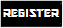
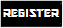

Colorado School of Mines Division


 



KILL CONFIRMED
Your kill has been submitted. You should recieve an email within the next few minutes to confirm this kill. It may take a few minutes for the system to send the email, so please be patient. If an email is not sent within the hour, please contact Max Mazzocchi at mmazzocc@mines.edu. Please also contact if you have any problems with your kill or feed timer. As of now, your feed timer should be reset, and the human you killed should now be a zombie.
We recommend you navigate to the "Players" page, to confirm your kill.
Good luck!
© 2011 Maxwell Mazzocchi
Your kill has been submitted. You should recieve an email within the next few minutes to confirm this kill. It may take a few minutes for the system to send the email, so please be patient. If an email is not sent within the hour, please contact Max Mazzocchi at mmazzocc@mines.edu. Please also contact if you have any problems with your kill or feed timer. As of now, your feed timer should be reset, and the human you killed should now be a zombie.
We recommend you navigate to the "Players" page, to confirm your kill.
Good luck!
© 2011 Maxwell Mazzocchi
Disclaimer